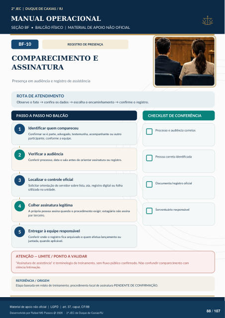

REGISTRO DE PRESENÇA
COMPARECIMENTO E
ASSINATURA
Presença em audiência e registro de assistência
ROTA DE ATENDIMENTO
Observe o fato → confira os dados → escolha o encaminhamento → confirme o registro.
PASSO A PASSO NO BALCÃO
CHECKLIST DE CONFERÊNCIA
Identificar quem compareceu
Confirmar se é parte, advogado, testemunha, acompanhante ou outro participante, conforme a equipe.
Verificar a audiência
Conferir processo, data e sala antes de orientar assinatura ou registro.
Localizar o controle oficial
Solicitar orientação do servidor sobre lista, ata, registro digital ou folha utilizada na unidade.
Colher assinatura legítima
A própria pessoa assina quando o procedimento exigir; estagiário não assina por terceiro.
Entregar à equipe responsável
Conferir onde o registro fica arquivado e quem efetua lançamento ou juntada, quando aplicável. Processo e audiência corretos Pessoa correta identificada Documento/registro oficial Serventuário responsável
ATENÇÃO — LIMITE / PONTO A VALIDAR
“Assinatura de assistência” é terminologia do treinamento, sem fluxo público confirmado. Não confundir comparecimento com ciência/intimação.
REFERÊNCIA / ORIGEM
Etapa baseada em relato de treinamento; procedimento local de assinatura PENDENTE DE CONFIRMAÇÃO.
Ver também o infográfico original (página 88)
